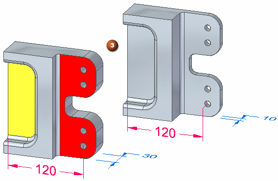
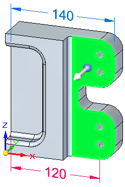
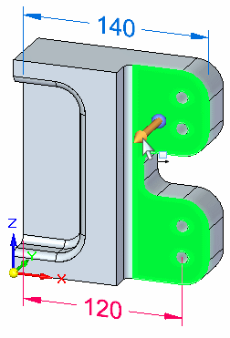
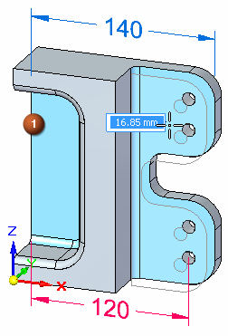
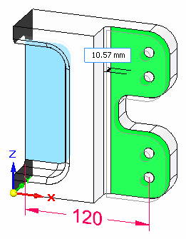
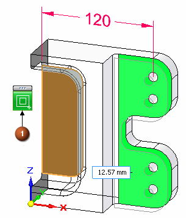
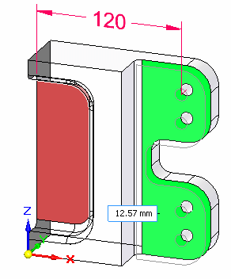
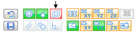
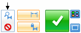
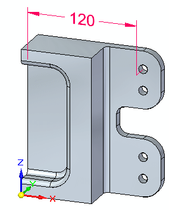

Activity: Using Solution Manager (scenario 3)
Extend the red face 20 mm in the Y direction. The yellow face is coplanar to the red face. The yellow face should remain fixed. In this edit scenario, the solution does not fail. You only want to alter the solution.
Click here to download the activity file.

-
Open solution_manager_scenario3.par.
On the Advanced Design Intent panel, click the Restore button (4) to restore default settings. Auto Preview (5) should not be checked.

For this activity, turn on the Lock to Base Reference (1) Design Intent. This will lock face (2) to the YZ reference plane.

Select the face shown.

Start the synchronous edit by clicking the axis.

As you move the cursor, notice the rear plane (1) also moves because it is coplanar to the selected face.

Press Ctrl+E or click the magnifying glass icon to enter Solution Manager.
Notice only two faces participate in the edit.

There are four ways to alter the solution in this scenario.
-
Right-click the blue colored face. On the relationships palette, click the coplanar relationship (1).

-
Click the blue colored face. This isolates the face from the solution. Isolated faces turn red.

-
On the Advanced Design Intent panel, turn off the Coplanar rule. This isolates the blue colored face from the solution.

Note:Be aware that this method causes all coplanar faces in the model to not participate in the solution.
-
On the Advanced Design Intent panel, click the Suspend Design Intent Settings button. The blue colored face is not recognized in the solution.

Note:Be aware that this method causes all relationships in the model to be ignored in the solution.
Choose one of the methods mentioned. Click the Solution Manager check mark button.

In the dynamic edit box, type 20 and press Enter. Press Escape to clear the select set.
